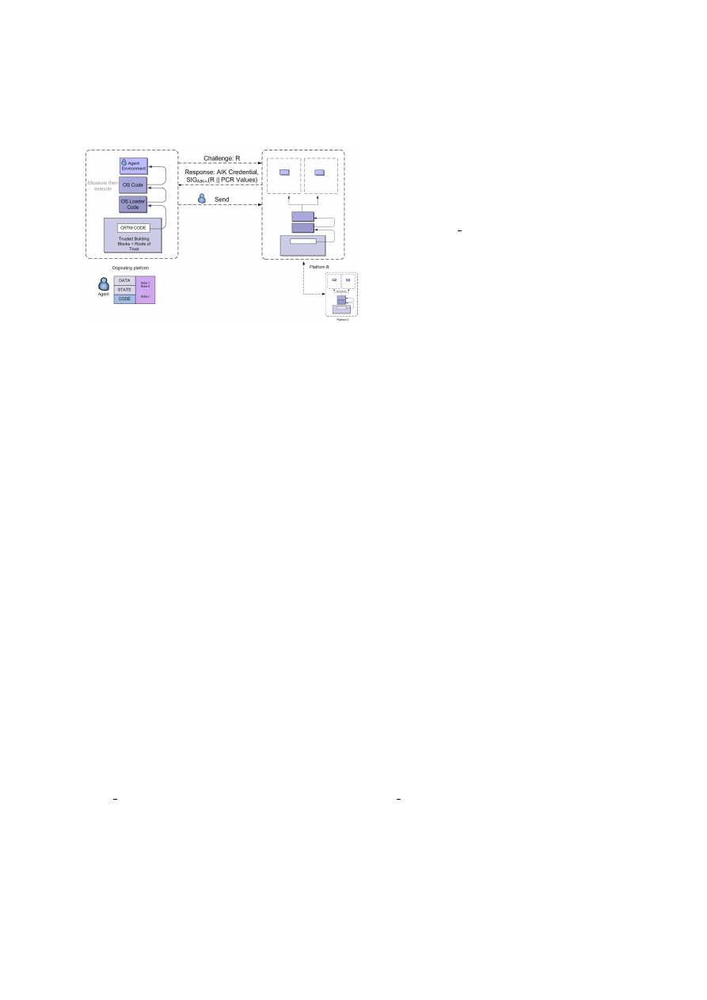
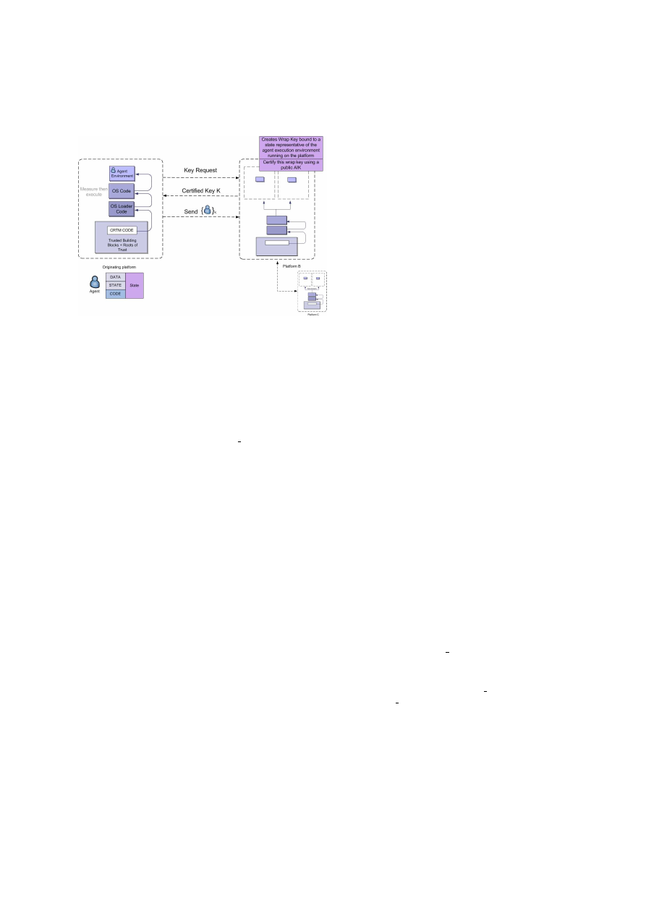

Mobile Agents and the Deus Ex Machina
Shane Balfe
∗
and Eimear Gallery
†
,
Royal Holloway, University of London,
Egham, Surrey, TW20 0EX, United Kingdom.
{
s.balfe, e.m.gallery
}
@rhul.ac.uk
Abstract
This paper aims to examine the benefits the intro-
duction of trusted computing can bring to the mobile
agent paradigm, with a specific emphasis on mobile
agent security.
1
Introduction
The introduction of trusted computing into the com-
puter security vista has resulted in a myriad of pub-
lications across a slew of computer science research
topics [7]. However, a dearth of information exists
on trusting computing’s applicability to the mobile
agent paradigm. Anecdotal evidence would suggest
that the mere presence of trusted computing technol-
ogy in a mobile agent setting would solve a multitude
of security issues currently intrinsic to mobile agent
systems [4]. Trusted computing’s introduction in this
context can be viewed as akin to the introduction of
a Deus Ex Machina in ancient Greek and Roman dra-
mas. Here trusted computing is presented suddenly
and unexpectedly to provide a contrived solution to
the apparently insoluble problem of mobile agent se-
curity.
∗
Research was sponsored by the U.S. Army Research Labo-
ratory and the U.K. Ministry of Defence and was accomplished
under Agreement Number W911NF-06-3-0001. The views and
conclusions contained in this document are those of the au-
thor(s) and should not be interpreted as representing the of-
ficial policies, either expressed or implied, of the U.S. Army
Research Laboratory, the U.S. Government, the U.K.
†
Research was sponsored by the Open Trusted Comput-
ing project of the European Commissions Framework 6 Pro-
gramme.
It is important that we first define what we mean
by a ‘mobile agent’. We adopt the definition given
in [13] in which a mobile agent is defined as “an
autonomous, reactive, goal-oriented, adaptive, per-
sistent, socially aware software entity, which can ac-
tively migrate from host to host”. A mobile agent in-
cludes code, data and execution state. Given this de-
finition, the mobile agent paradigm offers a plethora
of deployment scenarios that may exploit one or more
of these attributes. Mobile agent systems have been
proposed for use in areas as diverse as information
management, contract negotiation, service brokering
and particularly in e-commerce scenarios. However,
precisely because the mobile agent paradigm offers
numerous deployment scenarios, both mobile agents
and the hosts upon which they execute are placed at
greater risk of compromise [6]. From the host per-
spective, the execution of a mobile agent may poten-
tially lead to information leakage or denial of service
attacks in which an agent exploits some vulnerabil-
ity in the host system. Conversely, the very mobility
of an agent places it at increased risk from attack
by malicious hosts. As a malicious host controls the
environment in which an agent executes it can ef-
fectively operate a Cartesian deception in which the
platform is capable of transmogrifying its environ-
ment in order to deceive an agent. The results of this
deception can engender a number of security sensitive
violations including eavesdropping of agent commu-
nications, altering an agent’s state or preventing an
agent from performing its task.
This paper aims to examine the benefits trusted
computing functionality can bring to the mobile
agent paradigm. In describing the components nec-
1

essary for a trusted computing enhanced frame-
work, it is important that we first introduce the re-
quired functionality. We assume the ubiquitous de-
ployment of the following components, the cumula-
tive presence of which represents a Trusted Mobile
Agent Platform (TMAP): a Trusted Platform Mod-
ule (TPM), processor/chipset extensions such as In-
tel’s La Grande or AMD’s Pacifica/Presidio and Op-
erating System support such as Microsoft’s NGSCB.
We rely on the services provided by TMAPs to en-
force strong platform isolation.
In particular, we
use the TPM’s sealing mechanism to protect security
critical functions within a mobile agent. The use of
sealing in this context provides a mechanism through
which a mobile agent can securely migrate from one
platform to another whilst retaining a guarantee that
the next visited platform will behave in an expected
manner to meet the agents particular purpose.
The remainder of this paper is organised as fol-
lows. In section 2, we briefly review previous work in
the area of mobile host and mobile agent security as
well as examining prior work completed in the area
of agent systems and trusted computing. In section
3, we look at how agent protection can be augmented
using trusted computing, with particular reference to
secure agent migration. Finally, we conclude with
section 4.
2
Mobile Agent Security
As stated above, the threats typically ascribed to
mobile agent systems tend to be context driven but
can broadly be catagorised into: threats to the host
and threats to the agent [6]. Attacks that can be
mounted by malicious mobile agents include: unau-
thorised access to resources, flooding attacks caused
by replication, environment monitoring and unautho-
rised modification or deletion of host configuration.
Conversely, attacks that can be mounted by malicious
hosts include: eavesdropping on agent code, data or
execution state; unauthorised modification of agent
code, data or execution state; incorrect execution of
agent code; denial of service, eavesdropping on or
unauthorised manipulation of agent interactions and
returning incorrect results to system calls issued by
an agent.
2.1
Safeguards
for
Protecting
the
Host
The problem of a host assigning correct access per-
missions to a mobile agent is a non-trivial matter, es-
pecially given difficulties in establishing agent prove-
nance. This is further compounded by the fact that
an agent could start out as trustworthy only to be
compromised by a malicious platform prior to arriv-
ing at its current destination. However, the issue of
protecting a host from a mobile agent is largely con-
sidered manageable given existing solutions to host
protection. Techniques such as software-based fault
isolation [16], have long been used to constrain the
actions an agent can perform on a system.
The
new components introduced in TMAPs can enhance
current software sandboxing techniques by providing
hardware-enforced isolated environments.
2.2
Safeguards
for
protecting
the
Agent
Intuitively, the probability of a mobile agent being
compromised by a malicious platform increases in
proportion to the length of an agent’s itinerary. In
order to prevent an attack against a mobile agent a
number of proposals have been put forward in the
literature, proposals such as mutual itinerary record-
ing [12], execution tracing [15], code obfuscation [3]
and clueless agents [11]. Clueless agents represent
the most important agent protection mechanism in
terms of this paper. Using Environmental Key Gen-
eration (EKG), keying material is assembled from
certain forms of environmental data. An agent car-
rying encrypted code or information can only be de-
crypted by a host if certain predefined environmental
conditions are met. These conditions are hidden from
the host using a one-way hash function. Indeed, the
agent itself will be unaware of the triggering action,
hence the additional moniker, clueless agents. For a
full description of clueless agents and EKG, we refer
readers to [11].
2

2.3
Trusted Computing and Agent
Systems
In the context of trusted computing, a Trusted Plat-
form (TP) is one that behaves in the expected man-
ner for a particular purpose [14]. In this paper we are
concerned with three aspects of a TP, remote attesta-
tion, sealing and isolation. Remote attestation is the
process by which a platform declares its current op-
erating environment/software state as recorded in a
dedicated set of TPM registers called Platform Con-
figuration Registers (PCRs). Sealing is the process
through which data can be used only if a platform’s
state matches some pre-agreed value. Isolation refers
to hardware and software support for isolated execu-
tion. For interested readers, an introductory text to
Trusted Computing can be found in [7].
The use of trusted hardware as a method of pro-
tecting mobile agents can be traced back to Wilhelm
et al.’s work on adding trusted third parties (in the
form of an isolated hardware environments) to host
systems [17]. In many ways this work was rather
prophetic in that their requirements for trusted hard-
ware are very much mirrored by what we are seeing
with trusted computing today. Wilhelm et al. de-
fine a Trusted Processing Environment (TPE) to con-
sist of a CPU, RAM, ROM, non-volatile storage all
of which executes inside of a virtual machine. It is
within this environment that an agent executes. As
the agent is executing within an isolated environment
the host OS will not be able to observe its execution.
At the time of writing, Wilhelm’s system would have
been proprietary and expensive, however, this is no
longer the case as TPM and LaGrande/Pacifica en-
abled hardware will soon be ubiquitous in the mar-
ketplace.
The use of trusted computing in agent systems has
also been put forward in [10, 9, 8, 2]. Both [8, 2]
deal with non-mobile agents used in the preservation
of user privacy. In [9] a number of proposals are
made to enhance privacy protection for mobile ap-
plications; each of which stresses the need for sealed
storage functionality and the benefits that the ability
to recognise when a platform will behave as expected
can bring. Recently, a trusted computing enhanced
mobile agent platform called SMASH was proposed
in [10]. In this system trusted computing is deployed
to form a middleware-based instantiation of some as-
pects of Wilhelm et al’s proposal [17].
3
Protecting
Mobile
Agents
with Trusted Computing
In this section we will look at how trusted computing
functionality can be used to protect sensitive agent
information (be it code, data or state). Through the
examination of a number of scenarios we will demon-
strate how an agent creator can extend their control
over subsequent environments in which an agent will
execute.
3.1
Security Assumptions
•
Assumption 1 (TMAP Ubiquity)
: Each
hosting platform contains a TPM, La Grande
or Pacifica processor/chipset extensions and OS
support for trusted computing.
•
Assumption 2 (Authenticated Boot)
: Upon
platform start-up and reset the software state of
the TMAP is measured and the measurements
stored to the TPM PCRs.
•
Assumption 3 (Trusted Originating Plat-
form)
: The initial host platform from which the
mobile agent originates is considered trusted.
•
Assumption 4 (Agent Integrity)
: Any sta-
tic agent information is digitally signed by the
originator.
•
Assumption 5 (PCR Consistency)
: The use
of PCR registers to store measurements repre-
sentative of a TMAP’s software state is consis-
tent amongst all TMAP platforms.
•
Assumption 6 (AIK Credentials)
: Every
TMAP platform has enrolled at least one of their
AIKs with a Privacy-CA which is know to every
other TMAP platform.
3

Figure 1: Scenario 1
3.2
Scenario 1
This first scenario (see Figure 1) represents the base
case from which an originating platform requests a
remote platform (B) to attest to their current op-
erational environment. If the reported environment
is deemed acceptable, the originating platform will
send their agent to B. Once the agent has finished
executing on B, B requests platform C to attest its
current operational environment, which B compares
to a list of acceptable states (obtained from the agent)
prior to agent migration. This process of attested mi-
gration continues until the agent achieves its goal or
reaches the end of its itineracy.
In order to implement such an approach a set of
values, which are representative of trusted TMAP
states, must be stored within an agent.
Here
each value takes the form of a tuple of one or
more
{
P CR number, acceptable value
}
pairs, where
P CR number
is the number of the required PCR and
acceptable value
is what the host deems good mea-
surement digests for that PCR. The agent code, the
set of values and any static state or data elements
of the agent are digitally signed by the originating
platform.
Prior to agent migration a random number
is requested from the TPM of the TMAP on
which the agent is currently executing using the
TPM GetRandom
command. This random challenge
and a list of the indices of the PCRs to be reported are
then transmitted to the next TMAP on the agent’s
itinerary. The destination TMAP attests to the cur-
rent configuration of their platform (or, more specif-
ically, the values of the PCR indices specified) by
calling the
TPM Quote
command which outputs a
data structure consisting of the following elements:
the indices of the PCRs being reported; the values
of each of the specified PCRs; the signature of the
TMAP, using one of its attestation identity keys, over
the hash value computed from the random challenge
received from the mobile agent and the hash of the
PCR indices and their corresponding values.
This data structure,
along with destination
TMAP’s AIK credential, is returned to the TMAP
on which the mobile agent currently resides. Once
the response has been received, the AIK credential of
the destination TMAP is validated; the signature of
the destination TMAP on the returned data structure
is verified; the presence of the random challenge in
the returned data structure is confirmed; and the at-
tested PCR values of the destination TMAP is com-
pared to those stored locally. If a match is found
the agent migrates, else the agent moves to the next
TMAP on it’s itinerary and reruns the above steps.
Unfortunately, this solution only enables the state
of the destination TMAP to be verified at a particu-
lar point in time. There are no guarantees that the
destination TMAP will remain in its attested state
after it has been verified but prior the agent arriv-
ing. This problem is commonly referred to as the
time-of-check time-of-use problem.
3.3
Scenario 2
The solution illustrated in figure 2 is based upon the
key exchange protocol defined in [7, 5]. In this case,
a set of PCR values, which are representative of a
trusted TMAP state, must also be stored within the
agent, as per scenario 1.
Prior to agent migration, a request is made of the
next destination TMAP to generate an asymmetric
key pair where the private key component may only
be used when the destination TMAP is in a spec-
ified state. In order to generate this key pair the
TPM CreateWrapKey
command is called on the des-
4

Figure 2: Scenario 2
tination TMAP’s TPM with the specified state con-
straints for private key usage as input. The des-
tination TMAP next calls
TPM CertifyKey
which
generates a data structure containing the public key
from the newly generated key pair and a description
of state to which the corresponding private key is
bound, certified by an AIK of the destination TMAP.
This structure is forwarded to the current TMAP
on which an agent resides. Once this response has
been received, the AIK credential of the destination
TMAP is validated; the signature of the destination
TMAP on the returned data structure is verified; and
the state reflected in the PCRs to which the key is
bound is compared to the value stored within the
agent. If a match is found, the agent is encrypted
with the certified public key and migrates, else the
agent goes to the next TMAP on its itinerary and
reruns the above.
In this way, the agent can only be decrypted and
executed on the destination TMAP if it is in a trusted
state. While this solution overcomes any time-of-
check-time-of-use problem it is quite computationally
intensive and thus may not be suitable for certain de-
ployment scenarios.
3.4
Scenario 3
A sealed object in trusted computing is uniquely
bound to a single TPM instance. It is not possi-
ble for a sealed object to be opened on a platform
that did not originally seal that object. In scenario
2, we outlined an approach that would allow a host to
‘seal’ an object to a remote platform. However, such
a sealing mechanism merely represents a one-hop ex-
tension to the TCG’s native sealing approach. For
every host an agent visits, it would require the cur-
rent host encrypting an agent with a public key (for
which the private key is bound to an agreed state)
obtained from the next host. What we require is
a generic sealing mechanism that will allow an ob-
ject to be sealed to state that is reproducible on any
platform rather than being sealed to an individual
platform.
The solution we present here extends the concept
of environmental key generation, as briefly discussed
in section 2.2, to incorporate elements of trusted com-
puting. EKG is founded upon the idea of construct-
ing keying material from classes of environmental
data. A trusted computing augmented version of this
approach would be to use a current platform’s state,
as indicated by one or more PCR register values, as
the environmental data from which a key is created.
This key can then be used to ‘seal’ an agent’s sensitive
code, data and/or state information. This process is
illustrated as follows:
The originating platform defines the following:
N
:=
random nonce
K
:=
H
(“
the hash value computed f rom the values
of the T P M
0
s P CRs
”)
M
:=
E
K
(“
code/data/state inf ormation to be protected
−
specif ic to the mobile agent
”)
O
:=
Hash
(
N
⊕
“
the hash value computed f rom the values
of the T P M
0
s P CRs
”)
We then design an agent, which on arrival to a new
TMAP, uses the TPM PCRRead command to read
the values held in PCRs 0-15 and takes the hash of
the values read:
let
x
=
Hash
(
output of T P M P CRRead
(0)
to
T P M P CRRead
(15))
if
(
x
)
⊕
N
) ==
O
then
execute
D
H
(
x
)
(
M
)
5
In this way the sensitive agent code, data and/or
state information which has been protected using the
environmentally generated key can only be accessed
by a TMAP if it is in a state specified by the origi-
nating host.
The security of this approach is based upon the in-
ability of a host platform to guess the required plat-
form configuration register values. However, if this
approach is to be practical, the required platform
configuration register values should be chosen from
a constrained set. This may leave the agent open to
a dictionary attack by the host platform, whereby the
host can attempt to guess the required PCR values.
3.5
Scenario 4
A Certifiable Migratable Key (CMK) is a key that
can be migrated from the TPM on which it was gen-
erated but only under strict controls. In this way, a
CMK retains properties that the TPM, on which it
was generated, can certify. Such keys may be used in
order to provide security for mobile agents. In this
scenario, a Migration Selection Authority (MSA),
which has control over CMK migration, is required.
Initially, a CMK must be generated by the agent
originator using the
TPM CMK CreateKey
com-
mand, with the specified state constrains for private
key usage as input. The private key from the CMK
is then migrated to a set of chosen TMAPs under the
control of the MSA, who verifies the security proper-
ties of the TMAPs prior to key migration.
Once this has been satisfactorily completed, the
agent originator can encrypt any sensitive agent code
and data using the public CMK in the knowledge that
this sensitive information can only be decrypted by
a destination TMAP to which the private CMK has
been migrated and only when those platforms are in
a particular software state.
Alternatively, a TTP, acting as an MSA, may be
deployed in order to generate certifiable migratable
key pairs, where the private key from each is bound
to a particular software state (which is appropriate
to agent execution, for example, the latest version
of JRE executing on a particular OS). Host TMAPs
then register with this TTP, and request the migra-
tion of the required private CMKs. The desired pri-
vate CMKs are migrated on condition that the re-
questing TMAP meets the pre-established migration
policy of the TTP.
Once this has been satisfactorily completed, an
agent originator can retrieve a public CMK which
has been certified by the TTP, verify that the plat-
form configuration register values to which the cor-
responding private key is bound are suitable for the
agent in question, and validate the migration policy
of the TTP. Once each of these steps has been com-
pleted the agent originator can encrypt any sensitive
agent code and/or data using the public CMK in the
knowledge that this protected information can only
be decrypted by a TMAP to which the private CMK
has been migrated and only when this platform is in
a particular software state.
This solution assumes the inclusion of additional
infrastructure over scenario’s 1-3. In order for this
solution to work we require the presence of an MSA
within the network and for each agent host to enroll
with this MSA. This may not always be practical in
all deployments and may limit the scalability of such
a solution.
4
Conclusions
In this paper we outlined the security issues faced
by both mobile agents and mobile agent hosts, and
briefly discussed the extent to which trusted comput-
ing can be used to enhance the security of both. In
providing trusted computing enhancements to mobile
agent systems we examined various ways by which
trusted computing primitives can be deployed in or-
der that an agent originator can be secure in the
knowledge that each host platform their agent vis-
its will to behave in an expected manner prior to
sensitive agent information being accessed. We high-
lighted a number of ways by which we can achieve this
functionality and note the trade-offs between security
and practicality for each. In this context trusted com-
puting is not the obvious panacea that one may have
thought.
6

References
[1]
S. Crane. Privacy preserving trust agents. Tech-
nical Report HPL-2004-197, HP Labs, Bristol,
UK, 11 November 2004.
[2]
L. D’Anna, B. Matt, A. Reisse, T. Van Vleck,
S. Schwab, and P. LeBlanc. Self-protecting mo-
bile agents obfuscation report. Technical Re-
port Report 03-015, Network Associates Labo-
ratories, 2003.
[3]
Unlimited Freedom.
Interesting uses of
trusted computing,
part 2,
March 2004.
http://invisiblog.com/1c801df4aee49232/
\
#mobile
.
[4]
E. Gallery and A. Tomlinson.
Protection of
downloadable software on SDR devices. In
Pro-
ceedings of the 4th Software Defined Radio Fo-
rum Technical Conference (SDR 2005)
, Orange
County, California, USA, 14–18 November 2005.
Software Defined Radio Forum (SDRF).
[5]
W. Jansen and T. Karygiannis. Mobile agents
and security. NIST Special Publication 800-19,
National Institute of Standards and Technology
(NIST), Computer Security Division, Gaithers-
burg, Maryland, USA, 1999.
[6]
C. Mitchell, editor.
Trusted Computing
. IEE
Professional Applications of Computing Series
6. The Institute of Electrical Engineers (IEE),
London, UK, April 2005.
[7]
S. Pearson. Trusted agents that enhance user
privacy by self- profiling. Technical Report HPL-
2002-196, HP Labs, Bristol, UK, 15 July 2002.
[8]
S. Pearson.
How trusted computers can en-
hance for privacy preserving mobile applications.
In
Proceedings of the 1st International IEEE
WoWMoM Workshop on Trust, Security and
Privacy for Ubiquitous Computing (WOWMOM
’05)
, pages 609–613, Taormina, Sicily, Italy, 13–
16 June 2005. IEEE Computer Society, Wash-
ington, DC, USA.
[9]
A. Pridgen and C. Julien. A secure modular
mobile agent system. In
Proceedings of the 2006
international workshop on Software engineering
for large-scale multi-agent systems (SELMAS
’06)
, pages 67–74, Shanghai, China, 22–23 May
2006. ACM Press, New York, USA.
[10]
J. Riordan and Bruce Schneier. Environmental
key generation towards clueless agents. In G. Vi-
gna, editor,
Mobile Agents and Security
, vol-
ume 1419 of
Lecture Notes in Comptuer Science
(LNCS)
, pages 15–24. Springer–Verlag, Berlin–
Heidelberg, Germany, 1998.
[11]
V. Roth. Secure recording of itineraries through
co-operating agents. In
Workshop ion on Object-
Oriented Technology (ECOOP ’98)
, pages 297–
298, 20–24 July 1998.
[12]
K. Rothermel and M. Schwehm. Mobile agents.
In A. Kent and J.G. Williams, editors,
Ency-
clopedia for Computer Science and Technology
,
volume 40, pages 155–176. M. Dekker Inc., New
York, USA, 1999.
[13]
TCG.
TCG
Specification
Architecture
Overview.
TCG Specification Version 1.2,
The Trusted Computing Group (TCG), Port-
land, Oregon, USA, April 2003.
[14]
G. Vigna.
Cryptographic traces for mobile
agents. In G. Vigna, editor,
Mobile Agents and
Security
, volume 1419 of
Lecture Notes in Com-
puter Science
, pages 137–153. Springer–Verlag,
Berlin–Heidelberg, Germany, 1998.
[15]
R. Wahbe, S. Lucco, T.E. Anderson, and S.L.
Graham. Efficient software-based fault isolation.
In
Proceedings of the 14th ACM symposium on
Operating systems principles (SOSP ’93)
, pages
203–216, 5–8 December 1993.
[16]
U.G. Wilhelm, S. Staamann, and L. Butty. In-
troducing trusted third parties to the mobile
agent paradigm. In J. Vitek and C. Jensen, edi-
tors,
Secure Internet Programming: Security Is-
sues for Mobile and Distributed Objects
, volume
Lecture Notes In Computer Science, pages 469–
489. Springer-Verlag, London, UK, 1999.
7